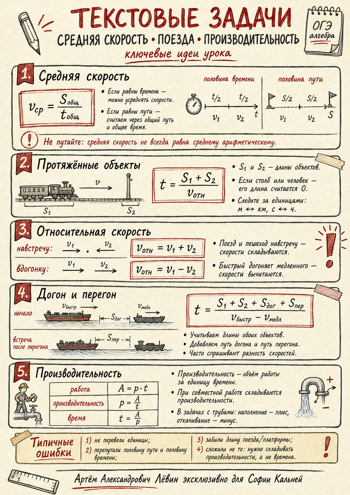

Визуальная опора к материалу
Сначала попробуйте разобрать тему по шагам. Если понадобится подсказка, раскройте иллюстрацию и сравните её с интерактивной моделью.
Открыть иллюстрацию-подсказкуНаглядная схема поможет увидеть связь между условием, формулой и ответом.
